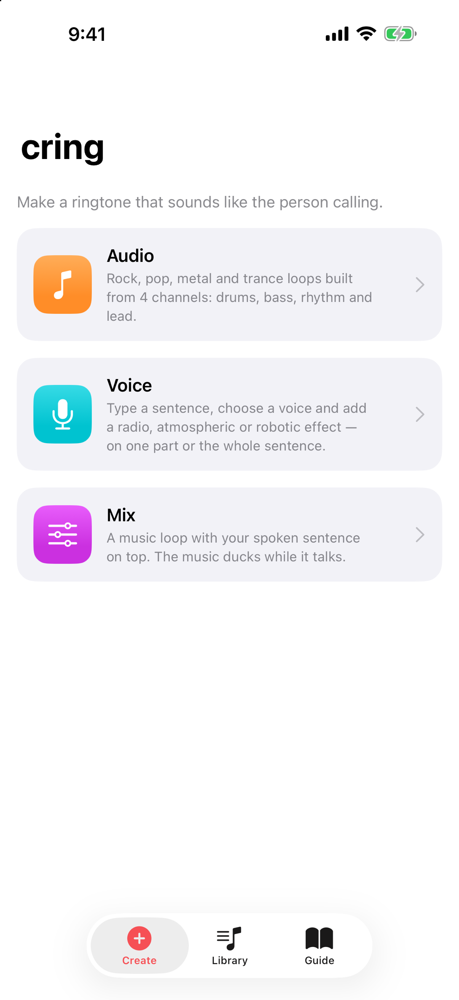
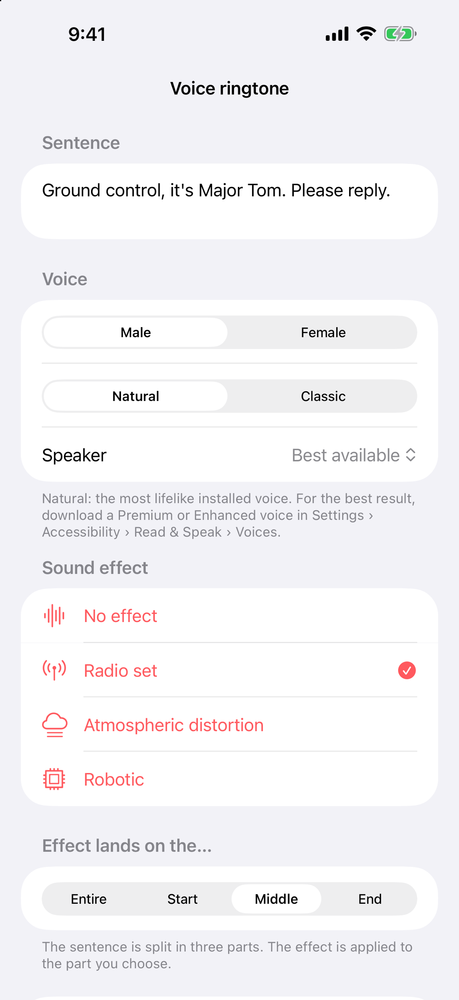

cring
Make a ringtone that sounds like the person calling.




- 36 rock, pop, metal and trance loops, built from four channels (drums, bass, rhythm, lead) you switch on and off.
- Or type a sentence and have it spoken in a male or female voice, with a radio, atmospheric or robotic effect.
- Or mix both: a music loop with your spoken sentence on top; the music ducks while it talks.
- Save and share your ringtones, and follow the built-in guide to attach one to a contact.
Questions and answers
How can I make a ringtone that sounds like the person calling?
In cring, build a ringtone from rock, pop, metal or trance loops, or type a sentence and have it spoken, then give each contact their own sound.
Can I turn a sentence into a ringtone?
Yes. Type a sentence, choose a male or female voice, and add a radio, atmospheric or robotic effect to the start, middle or end.
What is a mix ringtone?
A music loop with your spoken sentence on top. The music ducks while it talks.
How do I attach a ringtone to a contact?
cring has a built-in guide that shows how to attach your ringtone to a contact.